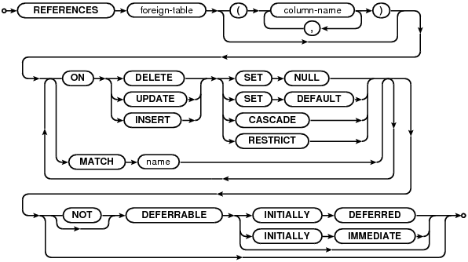

SQL As Understood By SQLite
CREATE TABLE
create-table-stmt:

column-def:

type-name:

column-constraint:

table-constraint:

foreign-key-clause:

A CREATE TABLE statement is basically the keywords "CREATE TABLE" followed by the name of a new table and a parenthesized list of column definitions and constraints. Tables names that begin with "sqlite_" are reserved for use by the engine.
Each column definition is the name of the column optionally followed by the datatype for that column, then one or more optional column constraints. SQLite uses dynamic typing; the datatype for the column does not restrict what data may be put in that column. The UNIQUE constraint causes an unique index to be created on the specified columns. All NULL values are considered different from each other and from all other values for the purpose of determining uniqueness, hence a UNIQUE column may contain multiple entries with the value of NULL. The COLLATE clause specifies what text collating function to use when comparing text entries for the column. The built-in BINARY collating function is used by default.
The DEFAULT constraint specifies a default value to use when doing an INSERT. The value may be NULL, a string constant or a number. The default value may also be one of the special case-independant keywords CURRENT_TIME, CURRENT_DATE or CURRENT_TIMESTAMP. If the value is NULL, a string constant or number, it is literally inserted into the column whenever an INSERT statement that does not specify a value for the column is executed. If the value is CURRENT_TIME, CURRENT_DATE or CURRENT_TIMESTAMP, then the current UTC date and/or time is inserted into the columns. For CURRENT_TIME, the format is HH:MM:SS. For CURRENT_DATE, YYYY-MM-DD. The format for CURRENT_TIMESTAMP is "YYYY-MM-DD HH:MM:SS".
The PRIMARY KEY attribute normally creates a UNIQUE index on the column or columns that are specified as the PRIMARY KEY. The only exception to this behavior is special INTEGER PRIMARY KEY column, described below. According to the SQL standard, PRIMARY KEY should imply NOT NULL. Unfortunately, due to a long-standing coding oversight, this is not the case in SQLite. SQLite allows NULL values in a PRIMARY KEY column. We could change SQLite to conform to the standard (and we might do so in the future), but by the time the oversight was discovered, SQLite was in such wide use that we feared breaking legacy code if we fixed the problem. So for now we have chosen to continue allowing NULLs in PRIMARY KEY columns. Developers should be aware, however, that we may change SQLite to conform to the SQL standard in future and should design new programs accordingly.
SQLite uses dynamic typing instead of static typing. Except for the special case of INTEGER PRIMARY KEY, SQLite will allow values of any type to be stored in any column regardless of the declared datatype of that column. The declared datatype is a type affinity that SQLite attempts to comply with, but the operation will proceed even if compliance is not possible.
If the "TEMP" or "TEMPORARY" keyword occurs in between "CREATE" and "TABLE" then the table that is created is only visible within that same database connection and is automatically deleted when the database connection is closed. Any indices created on a temporary table are also temporary. Temporary tables and indices are stored in a separate file distinct from the main database file.
If a <database-name> is specified, then the table is created in the named database. It is an error to specify both a <database-name> and the TEMP keyword, unless the <database-name> is "temp". If no database name is specified, and the TEMP keyword is not present, the table is created in the main database.
The optional conflict clause following each constraint allows the specification of an alternative default constraint conflict resolution algorithm for that constraint. The default is abort ABORT. Different constraints within the same table may have different default conflict resolution algorithms. If an INSERT or UPDATE statement specifies a different conflict resolution algorithm, then that algorithm is used in place of the default algorithm specified in the CREATE TABLE statement. See the section titled ON CONFLICT for additional information.
CHECK constraints are supported as of version 3.3.0. Prior to version 3.3.0, CHECK constraints were parsed but not enforced.
The number of columns in a table is limited by the SQLITE_MAX_COLUMN compile-time parameter. A single row of a table cannot store more than SQLITE_MAX_LENGTH bytes of data. Both of these limits can be lowered at runtime using the sqlite3_limit() C/C++ interface.
The CREATE TABLE AS form defines the table to be the result set of a query. The names of the table columns are the names of the columns in the result.
The text of each CREATE TABLE statement is stored in the sqlite_master table. Every time the database is opened, all CREATE TABLE statements are read from the sqlite_master table and used to regenerate SQLite's internal representation of the table layout. If the original command was a CREATE TABLE AS then then an equivalent CREATE TABLE statement is synthesized and store in sqlite_master in place of the original command. The text of CREATE TEMPORARY TABLE statements are stored in the sqlite_temp_master table.
If the optional IF NOT EXISTS clause is present and another table with the same name aleady exists, then this command becomes a no-op.
Tables are removed using the DROP TABLE statement.
ROWIDs and the INTEGER PRIMARY KEY
Every row of every SQLite table has a 64-bit signed integer key that is unique within the same table. This integer is usually called the "rowid". The rowid is the actual key used in the B-Tree that implements an SQLite table. Rows are stored in rowid order. The rowid value can be accessed using one of the special names "ROWID", "OID", or "_ROWID_".
If a column is declared to be an INTEGER PRIMARY KEY, then that column is not a "real" database column but instead becomes an alias for the rowid. Unlike normal SQLite columns, the rowid must be a non-NULL integer value. The rowid is not able to hold floating point values, strings, BLOBs, or NULLs.
An INTEGER PRIMARY KEY column is an alias for the 64-bit signed integer rowid.
An INTEGER PRIMARY KEY column can also include the keyword AUTOINCREMENT. The AUTOINCREMENT keyword modified the way that B-Tree keys are automatically generated. Additional detail on automatic B-Tree key generation is available separately.
The special behavior of INTEGER PRIMARY KEY is only available if the type name is exactly "INTEGER" (in any mixture of upper and lower case.) Other integer type names like "INT" or "BIGINT" or "SHORT INTEGER" or "UNSIGNED INTEGER" causes the primary key column to behave as an ordinary table column with integer affinity and a unique index, not as an alias for the rowid. The special behavior of INTEGER PRIMARY KEY is only available if the primary key is a single column. Multi-column primary keys do not become aliases for the rowid. The AUTOINCREMENT keyword only works on a column that is an alias for the rowid.
Note that searches against a rowid are generally about twice as fast as searches against any other PRIMARY KEY or indexed value.
This page last modified 2009/02/14 18:02:23 UTC